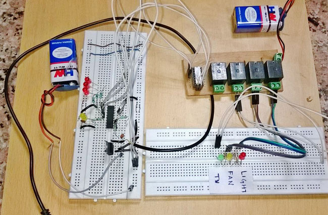
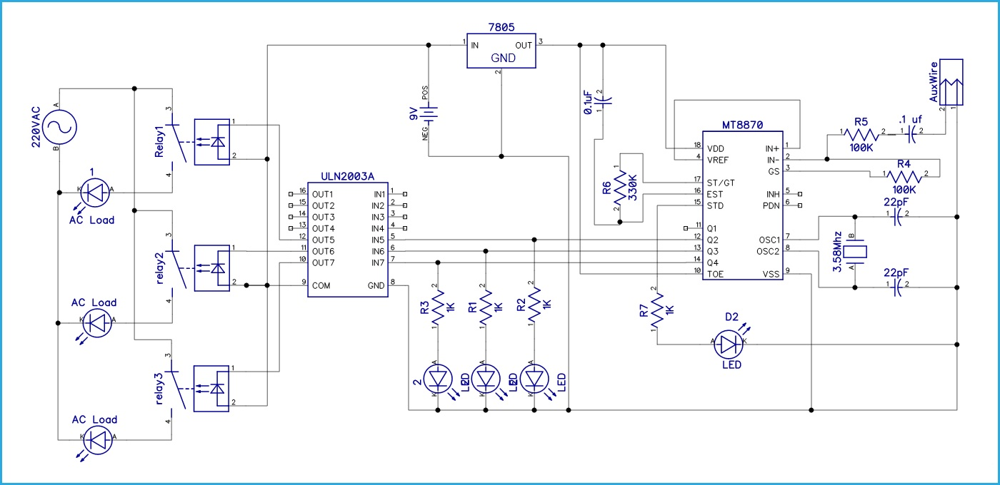

Podemos usar diferentes tipos de control en aplicaciones de comunicacion en sistemas domoticos, industriales entre otros. Los tipos que comunicacion electrica que usualmente se usan son con uso de conductor electrico o por medio del aire. Medios de transferencia electrica por aire podemos tener sistemas RF, wifi, bluetooth. Pero este proyecto esta pensado para ser realizado de modo cableado sin la utilizacion de un microcontrolador
| Componente | Cantidad | Descripcion |
|---|---|---|
| MT8870 DTMF | 1 | Decodificador que convierte las senales de frecuencia que salen del telefono a senales digitales |
| ULN2003A | 1 | Circuito integrado de compuertas NOT |
| Rele de 5V | 3 | Para conectar la carga de potencia a circuito electronico |
| Socate con enchufe o LEDS | 3 | Para simular la carga de corriente alterna |
| Cables varios de conexiones | ---- | ---- |
| ProtoBoard | 2 | ---- |
| Cable auxiliar jac | 1 | Para conectar la salida de audio del telefono celular y el circuito electronico |
| Bateria de 9V | 2 | |
| Terminales tipo bloque | 4 | Para conexion de los reles |
| 100k Resistor | 2 | ---- |
| 330k Resistor | 1 | ---- |
| 0.1 uF Capacitor | 2 | ---- |
| 22 pF Capacitor | 2 | ---- |
| 3.57 Mhz Cristal | 1 | ---- |
| Telefono Movil | 1 | ---- |
| Diodos Led | 3 | ---- |
| 1k Resistor | 6 | ---- |
| 7805 | 1 | Regulador de tension |
Existen ciertas frecuencias que son usadas para crear un tono DTMF. Combinando o mezclando dos o mas frecuenciaas, se genera un tono DTMF. Las frecuencias que podemos obtener son dadas a continuacion:

En la figura anterior se pueden apreciar do grupos de diferentes frecuencias. Cuando se combinan una frecuencia alta y una frecuencia baja , el tono que se crea es llamado Tono Dual de Multiple Frecuencia. En este proyecto se plantea el control de dispositivos, con el presionar de el teclado del telefono movil. A continuacion un diagrama de funcionamiento:

Se conecta el telefono movil al decodificador mediante el cable auxiliar. Entonces la salida que se obtiene en el decodificador (MT8870) es la siguiente:

En el diagrama de circuito en Q1 LIGHT esta conectado, en Q2 FAN esta conectado y en Q3 TV esta conectado a traves del IC del controlador de rele. Hemos dejado Q4. Ahora cuando presionamos la tecla 1 en el teclado de marcacion del telefono movil, DTMF decodifica este tono y genera una salida digital dada en la tabla. Ahora De acuerdo con la salida dada en la tabla Q1 es ALTA y Q1 esta conectada con la luz asi que LUZ ENCENDIDA. Si queremos APAGAR la LUZ, debemos presionar la tecla numero 8. Porque en la salida de la tecla 8, Q1, Q2 y Q3 BAJA y Q4 son ALTAS y no hemos usado Q4. Entonces, no importa que Q4 sea ALTO o BAJO. Pero nuestra operacion se ha realizado porque Q1 esta BAJA en la salida de la clave 8 y el resto de los aparatos no se han visto afectados. Ahora queremos encender el VENTILADOR, asi que debemos presionar la tecla 2 porque al presionar la tecla 2, solo Q2 se activa y el resto de la salida permanece igual. Ahora si apagamos el VENTILADOR, entonces necesitamos presionar la tecla 8 nuevamente como antes para LUZ. Ahora si queremos TV, necesitamos presionar la tecla4 y para desactivarla necesitamos presionar 8 como antes. Ahora supongamos que queremos ENCENDER todos los aparatos, por lo que debemos presionar la tecla 7 (ver tabla) y apagar todas las teclas 8 (ver tabla).
Ahora si necesitamos encender LIGHT y FAN, necesitamos presionar key3 (ver tabla). Y ahora queremos EN TV, así que debemos presionar la tecla 7, no la tecla4. Porque debemos mantenernos encendiendo los aparatos anteriores. Ahora si queremos APAGAR solo la LUZ, entonces necesitamos presionar la tecla6. Debido a que debemos volver a mantener, encienda los dispositivos anteriores, excepto LUZ. Asi, de esta forma podemos controlar cada dispositivo de acuerdo a la tabla de salida del decodificador
En el circuito a continuacion se muestra el uso del decodificador llamado MT8890 IC el cual convierte el tono en una salida de digital de cuatro bits. LIGHT, FAN and TV estan conectadas a las salidas Q1, Q2 y Q3 a travez del dispositivo ULN2003. 3 reles de 5V son usados ara controlar LIGHT, FAN y TV.
 link volver al inicio